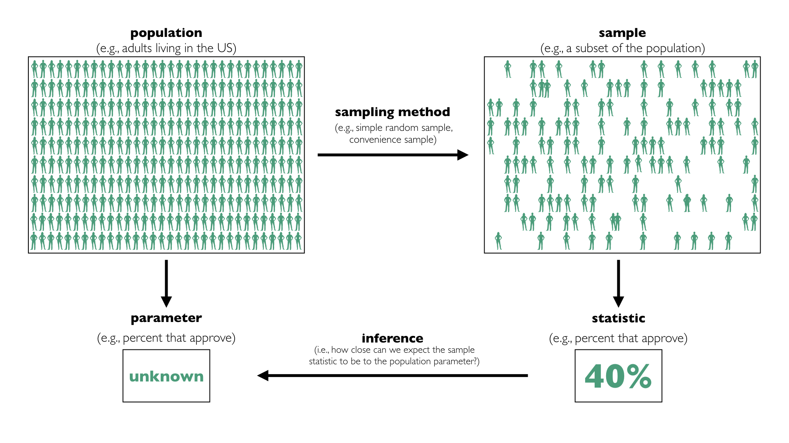

Chapter 4 Sample Surveys
4.1 A Conceptual Framework
In this chapter, we apply our knowledge of sampling (i.e., the numbered-ticket model) to sample surveys.
Political scientists often ask questions about large populations of people. We refer to the collection of cases of interest as the population. For example, we might care about the attitudes of adults living in the US. In this case, the population is adults living in the US.
About 250 million adults are living in the US. Of course, we cannot gather data on each of these 250 million people, even though that is the population of interest.
When the population is too large to study as a whole, political scientists sometimes focus on a smaller subset of the population. We refer to this subset of the population for which we gather data as a sample.
Usually, political scientists are interested in a particular numerical summary of the population, such as an average or a percent. We refer to the numerical summary of the population as the parameter. We refer to the corresponding summary of the sample as a statistic.
But when you do not have data for the entire population, but instead data for a sample, we must address a key question: How closely does the sample statistic resemble the population parameter?
For example, we might see that 42% of our sample approve of the job Donald Trump is doing as president, but we want to know what this means about the population. Is the population within one percentage point? Or is it withing 10 percentage points? We refer to the difference between the sample statistic and the population parameter as error. We rarely know the error, because we rarely know the population parameter.
It turns out that the process for choosing the sample affects (1) the likely size of the sampling error and (2) our ability to determine the likely size of the sampling error. We refer to the process for choosing the sample as the sampling method.
The process of learning about a population from a sample is called inference. The key to inference is determining the likely size of the sampling error.

Exercise 4.1 Define the following terms:
- population
- sample
- parameter
- statistic
- sampling method
- error
- inference
Solution
- the collection of cases of interest
- a subset of the population for which we gather data
- the numerical summary of the population (e.g., average, percent)
- the numerical summary of the sample (e.g., average, percent)
- the process for choosing the sample
- the difference between the sample statistic and the population parameter
- the process of learning about a population from a sample
4.2 The Simple Random Sample
The easiest way to make inferences about the population from a sample is to draw your sample from the population at random without replacement. We call this a simple random sample.
With a simple random sample, we randomly select individuals from the population without replacement, so each individual in the population is equally-likely to be included in the sample.
4.2.1 The Accuracy of the Simple Random Sample
The simple random sample is quite accurate (i.e., the error is small). We can use the numbered-ticket model to establish the following result, which I discuss more thoroughly next week:
The sample proportion will be the population proportion give or take [the SE] or so.
Recall that the \(\text{SE} = \dfrac{\text{SD of tickets in the box}}{\sqrt{\text{number of draws}}}\). Because the statement above is about a proportion, we should use a 0-1 box. However, the number of 0s and 1s that should be in the box isn’t clear because I haven’t described the population.
It turns out that a box with a single 0 and a single 1 is the worst case, so let’s use that. A little experimentation makes it clear that 50% 0s and 50% makes the SD (and therefore the SE) as large as possible. Therefore, we can think of a box with a single 0 and a single 1 as the “worst case.” The SD of the tickets in this box is 0.5.
The figure below uses this worst-case numbered-ticket model to compute the SE for the sample proportion as the sample size varies. It’s clear that the SE decreases as the sample size increases, but notice that it gets small quickly–you don’t need an enormous sample size to have a precise result.
Notice that for a sample size of 625, the SE is 0.02 (or two percentage points). For a sample size of 2,500, the SE is 0.01 (or one percentage point).
That is, the sample percentage will usually (i.e., 68% of the time) fall within two percentage points of the population percentage for a modest sample size of 625 people. For a sample size of 2,500, this shrinks to one percentage point.
sample_size <- c(100, 144, 196, 256, 324, 400, 1000, 1600, 2500)
worst_case_sd <- 0.5
worse_case_se <- 0.5/sqrt(sample_size)
data <- data.frame(sample_size, worse_case_se)
ggplot(data, aes(x = sample_size, y = worse_case_se)) +
geom_line()
4.2.2 The Importance of the Simple Random Sample
As I discuss below, the simple random sample is difficult to implement in practice. Why, then, do I emphasize it so heavily?
First, it’s easy and powerful, so when it’s possible to implement, the simple random sample is a great choice.
Second, because it’s simple, the simple random sample is easy to understand. As the sampling method becomes more complicated, the analysis becomes more technical and less intuitive–it’s no longer clear what it all means. However, the intuitions that we develop from a good understanding of the simple random sample generalize to other methods, even as the details change.
4.3 The Three Hurdles
While researchers can easily predict the error for simple random samples in theory, three hurdles arise in practice.
- Selection bias occurs when the researcher cannot enumerate the population or develop a method to sample randomly from the population.
- Non-response bias occurs when the researcher cannot get everyone in the sample to respond to the survey.
- Other biases occur when a researcher cannot get respondents to answer the questions honestly, potentially because of a poorly designed questionaire.
For example, if you wanted to randomly select 400 adults living in the US, how would you do it? The procedure isn’t immediately clear. And how would you convince those 400 folks to take the time to answer your questions? And how could you get them to honestly report their income and whether they voted?
All of these difficulties increase the error, but none are reflected in the SE above. It’s possible to assess the likely sizes of these errors, but difficult.
Because of these other important sources of error, we should distinguish between two sources of error.
- sampling error: the error due to sampling at random. If we repeated the same study again-and-again using a random sample, we’d get a slightly different result each time. This is due to sampling error.
- non-sampling error: errors not due to sampling at random, such as selection bias, non-response bias, and poor questionnaire design.
Usually, the SE reflects only sampling error and not other (sometimes larger) sources of error. You can think of the SE as the lower-bound on the likely error.
4.4 Good Alternatives to the Simple Random Sample
In a simple random sample, every member of the population has an equal chance of being selected into the sample. Equal chance of selection simplifies the analysis greatly, but it’s not critical that everyone has an equal chance of selection. It is crucial, though, each person’s chance of selection is known.
We refer to sampling methods with known chances of selection as probability samples.
We can develop a valid procedure to draw inferences about the population from probability samples. As long the chance of selection is known, then we can compute the sampling error. The analysis might be more complex, but it’s equally compelling.
In some cases, these alternatives might help overcome selection bias or non-response bias, but in many cases, they do not. The hurdles for the simple random sample are the same for the other probability samples.
Here are four examples of probability samples:
simple random sample: The simple random sample has known probabilities of selection. It’s just 1/(population size) for every member of the population.
systematic sample: List the individuals in the population (e.g., phone book student directly) and select every kth item on the list. Choose k to obtain the desired sample size. If you select the first item at random, then every individual has a known and equal chance of selection.
stratified sampling: Break the population into several groups or “strata” and sample separately from each of these groups before combining them into a single collection.
multistage cluster sampling: Conceptualize members of the population as being nested within hierarchies. Americans, for example, are nested within states, counties, and households. The researcher could select randomly select a state, then randomly select a county within that state, randomly select 10 households (addresses) in that county, and randomly select one person from each household. The researcher could repeat this 10 times to obtain a multistage cluster sample of 100 adults living in the US. This is useful when we cannot generate a list of adults living in the US. Using our knowledge of the number of people living in each county, the number of households in each county, and the number of people in the houses we select, we can compute the probability that each person is included in the sample.
For all these probabilities samples, we can make valid, compelling inferences from the sample to the population. However, the analysis of the simple random sample is the simplest. It’s also conceptually similar to the other methods.
4.5 Poor Alternatives to the Simple Random Samples
There are other common ways to collect a sample that do not use random selection with known selection probabilities.
We refer to sampling methods that do not use random selection with known selection probabilities as nonprobability samples.
Nonprobability samples can be helpful, but they do not allow us to easily predict the sampling error. This makes it hard to draw inferences about the larger population of interest.
Here are a few examples of nonprobability samples:
snowball sample: Might be used with hard to identify populations, such as drug users or sex workers. The researcher identifies an initial respondent to interview. The researcher asks the initial respondent and subsequent respondents to identify other potential respondents.
convenience sample: Might be used in the initial phase of a research project for pre-testing or pilot studies. The researcher chooses this sample for convenience (usually cost). Rather than pay hundreds of dollars for a national sample, the researcher might use students at their university or MTurk workers, for example.
quota sample: Breaks the population into several groups (e.g., women over 60, etc.) and samples a particular number or “quota” from each using a nonprobability method to obtain the desired sample size.
While these samples are easy to generate in practice, the researcher cannot easily predict the error.
4.6 An Infamous Sample Survey
Perhaps the most famous poll is the 1936 Literary Digest poll of the 1936 presidential election. In their poll of 10 million subscribers before the election, 1,293,669 (55%) preferred Landon and 972,897 (41%) preferred Roosevelt.
On Election Day, Roosevelt got 61% and Landon got 37%.
Exercise 4.2 Read the Literary Digest’s summary of their straw poll. Why do they have such confidence in their poll? Find several sentences where they boast about their extraordinary study. Using these sentences as evidence, what does the Digest think makes the poll accurate?
Hint
Is it the method for choosing the sample or the size of the sample? They never say “our sample is accurate because…,” but they strongly imply their (perhaps flawed) logic in several places.
4.7 Modern Polling
Modern polls work to achieve accurate results through two methods:
- Design a study that mimics a simple random sample as closely as practical.
- Use tools to adjust the sample statistics after the data collection to more closely mimic the target population.
Studies vary in their relative efforts. Some organizations spend hundreds or thousands of dollars per interview to closely mimic the simple random sample. Other organizations emphasize careful adjustments after collecting the data. Most studies use a mixture of the two.
Exercise 4.3 YouGov is a reputable polling company that’s popular in political science. Read Nate Cohn’s description of YouGov’s approach here (or here as a backup). Summarize the difference between YouGov’s approach and the simple random sample. Why doesn’t YouGov just use a simple random sample?
Exercise 4.4 The Annual Review of Political Science publishes invited articles in which established scholars discuss large bodies of research in political science. As such, the Annual Review of Political Science offers a wonderful resource when introducing yourself to research on a particular topic. Adam Berinsky recently wrote about public opinion polling. Read Berinsky (2017) and answer the following question based on the reading:
- Why is public opinion polling important in a democracy?
- Up to roughly 2000, public opinion polls relied on telephone surveys using random digit dialing and face-to-face interview using multistage cluster sampling. How has public opinion polling changed since? What problems remain?
- What is the “best” way to measure opinion? In particular, answer these two questions and explain. Should the researcher use one question or several questions? Should the researcher use a high, medium, or low level of abstraction? (The “best” approach might change depending on the context, but, for this exercise, take a position and defend it.)
4.8 Summary
- We study a small sample to learn about a large population.
- We refer to features of the population as parameters and features of the sample as statistics. We use sample statistics to learn about population parameters.
- In sample surveys, there’s one central question: how close are the sample statistic and the population parameter?
- Simple random samples work extremely well and are simple to analyze.
- Other probability samples can improve on simple random samples but are much more complex to analyze.
- Nonprobability methods do not allow the researcher to easily predict the sampling error.
- The method of generating the sample is more important than the size of the sample.
- In practice, it can be difficult to generate an appropriate sampling frame, obtain a high response rate, and ask good survey questions.
- In practice, modern survey methods are quite complicated. However, we can use the simple random sample as a model to understand and interpret results from much more complicated designs.